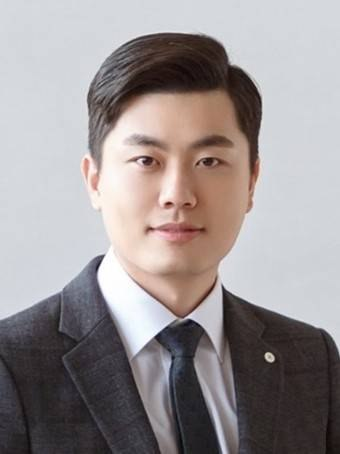
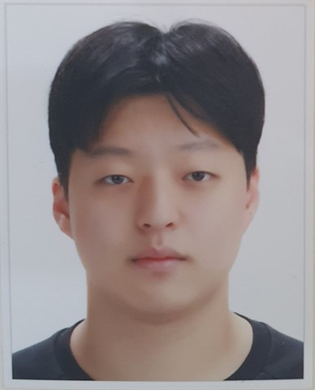
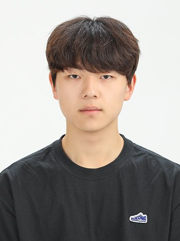
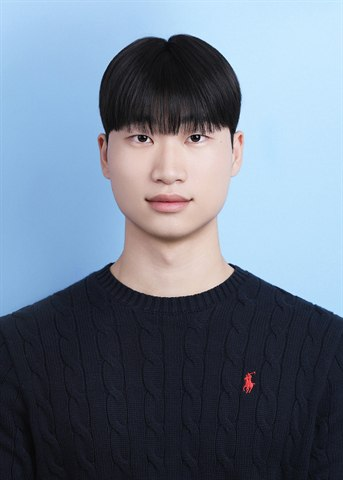
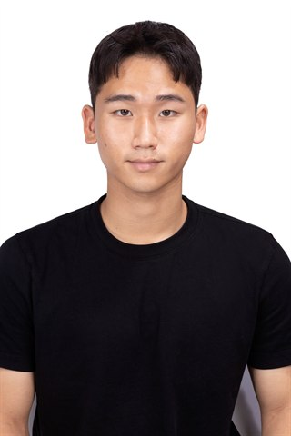
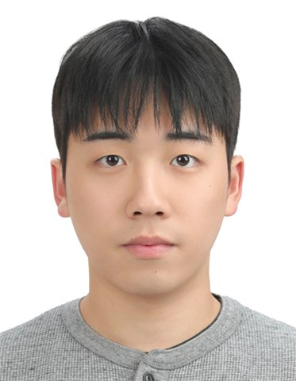
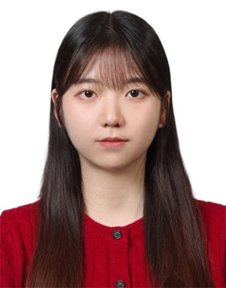
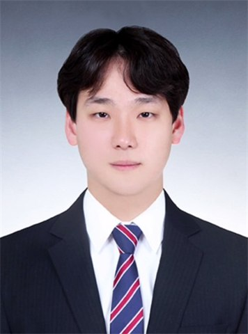

Principal investigator

Assistant Professor & Department Chair
Department of Naval Architecture and Ocean Engineering, Inha University
Researchers
Gyeongseo Min (민경서)
Ship manoeuvring; energy-saving devices; tidal turbines
7 first-author · 5 co-author SCIE papers

Haechan Yun (윤해찬)
Hull roughness; ship manoeuvring; ice resistance
1 first-author · 8 co-author SCIE papers

Younguk Do (도영욱)
Floating offshore wind; rotor sails; ice-going ships
1 first-author · 7 co-author SCIE papers

Kangmin Kim (김강민)
Tidal turbines; propeller modelling; second-generation intact stability
1 first-author · 5 co-author SCIE papers

Keounghyun Jung (정경현)
CFD model development for scour prediction
3 co-author SCIE papers

Mingi Kim (김민기)
Floating offshore wind; actuator line method

Seunghee Song (송승희)
Tidal turbine performance analysis
See Young Lee (이시영)
Ship resistance
Career destinations

Wooseok Choi (최우석)
Hull roughness; ship manoeuvring
2 first-author · 5 co-author SCIE papers
Speed penalty of a naval ship due to biofouling